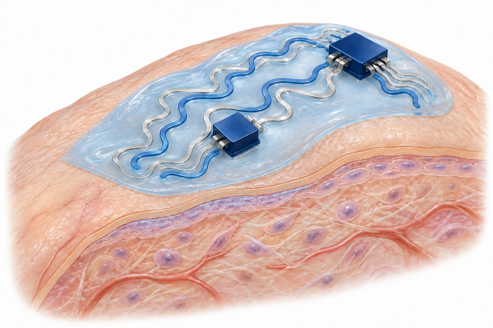

Tissue & material
Materials in contact with tissue
How can a material stay in contact with wet, moving tissue? Explore research on adhesion, mechanical adaptation and molecular transport.
20papersMaterials in contact with tissue
BLISS Research Library
Explore BLISS Lab’s research on tissue-adhering hydrogels, stretchable conductors, device packaging and surfaces that shape biological interactions. Browse by theme and read about the questions, approaches and findings behind each study.

01 / EXPLORE THE INTERFACES
Follow the materials, connections and tissue-facing surfaces that make up a bioelectronic device.
Tissue & material
How can a material stay in contact with wet, moving tissue? Explore research on adhesion, mechanical adaptation and molecular transport.
Substrate & interconnect
How does current travel through materials that bend and stretch? Explore liquid metals, conductive fibers and soft substrates.
Interconnect & chip
How can soft materials and electronic components work as one device? Explore bonding, assembly, insulation and protective packaging.
Device & host
What happens when a device meets the body? Explore surfaces that address fouling, friction and interactions with cells and tissue.
Papers are grouped by their main topic, with links to other relevant themes.
02 / RESEARCH
Discover the problem each study addresses, how it approaches it and what it reports. Each paper page includes experimental context and the sources used in the summary.
Nature Communications, 17, 5526 (2026)
STAT, a quinone-mediated double-network hydrogel, bonded to wet porcine skin at 273 kPa lap-shear strength and stopped mouse liver bleeding within 10 s.
Science Advances, 11(37), eadz1228 (2025)
A lubricant-infused, BDNF-immobilized coating on flexible neural fibers cut insertion load from 25.2 to 2.94 mN and enabled 12-month recording in mice.
npj Flexible Electronics, 8, 39 (2024)
Dried poly(vinyl alcohol)–tannic-acid adhesive layers join different soft-electronic materials. Water-dependent polymer-chain mobility enables dry–dry and hydrogel–dry assembly, with tests of how the bonded interfaces behave during deformation.
ACS Nano, 18(19), 12210-12224 (2024)
A fiber-shaped capacitive sensor coupled to a coil wirelessly tracks deformation in reconstructed soft tissue. The study follows changing strain signals in one pig with a reconstructed Achilles tendon; it does not directly measure the tissue’s failure strength.
Advanced Functional Materials, 34(31), 2311696 (2024)
Liquid-metal particles functionalized with reduced graphene oxide, platinum and gold form a deformable electrochemical electrode. The study evaluates analyte detection in buffer and electrode responses after repeated stretching, rather than establishing in-vivo sensing performance.
Advanced Science, 10(12), 2207237 (2023)
A hydrogel uses a dynamic nanoconfinement network to limit swelling while retaining compliant, conductive behavior. Demonstrations include deformation sensing on an excised porcine bladder and electromyography recorded at the skin.
Science Advances, 6 (44), eabb0025 (2020)
A lubricated micro/nanostructured coating aims to limit bacterial attachment on orthopedic fixation hardware. A rabbit fracture model with precontaminated implants evaluates infection-related inflammation and bone healing.
Advanced Functional Materials, 25 (21), 3114-3121 (2015)
Silver nanowires bridge silver nanoparticles inside stretchable polymer fibres. The abstract reports conduction during stretching and glove-based motion sensing, with resistance changing as the fibre deforms.
03 / BEYOND THE PAPER
Read university announcements, news articles and publisher features alongside the papers they discuss.
Explore research storiesAbout this library